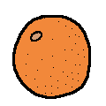
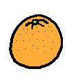
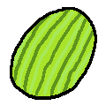

| Fruit | Description | Taste |
|---|---|---|
| Apple | Pretty basic if you ask me. But it goes great with many things, like pie and... pie. | Sweet |
| Banana | We all know the mushy brown parts are edible, but no one will judge you if you cut it off anyway. Do monkeys even really like bananas that much? | Sweet |
| Blueberry | Blueberries on their own are... eh. I really only eat them in muffins and pancakes. Also, have you ever seen blueberry flavored candy? What the heck is a blue raspberry? | Plain |
| Cherry | A very good flavor for candy. Cherries from jars are better than "real" cherries. The ones with seeds are too much work. | Sweet |
|  Grapefruit | I'm not sure how or if other people eat grapefruit, but this fruit should only be eaten with at least a cup of sugar poured in. | Bitter |
| Grapes | Best. Literally the best fruit ever. Artificial or natural. | Sweet |
| Lemon | Only really enjoyable when in drink form. Don't tell me you eat them as they come, you'd die. | Sour |
|  Orange | Really good, but its hard to find the perfect orange with all of their weird skin stuff. It even got a color named after it. Or is it the other way around? | Tangy |
| Peach | Tastes good I guess, but they're kinda messy to eat. Can't really trust fruits with big secret pits inside just waiting to choke someone whose never eaten a peach before. | Sweet |
| Pear | Kind of like apples. Don't really eat them that much. If apples were Mario, pears would be Luigi. | Plain |
| Persimmon | One of those fruits that look like a vegetable. Tastes like cinnamon and sugar! | Sweet |
| Pineapple | Very tangy and citrus-y. Don't eat too much or your tongue will pay big time. | Tangy |
| Star fruit | Never had one before, but it looks cool. | I don't know |
| Strawberry | A baker's favorite fruit. Featured in many desserts. Gets along with tons of other flavors. | Sweet |
|  Watermelon | If it's just water, then why does it taste so good? Some people eat it with salt. | Sweet |